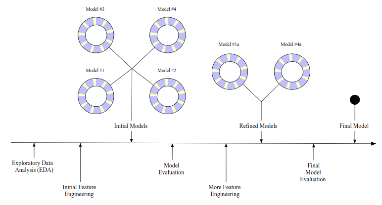
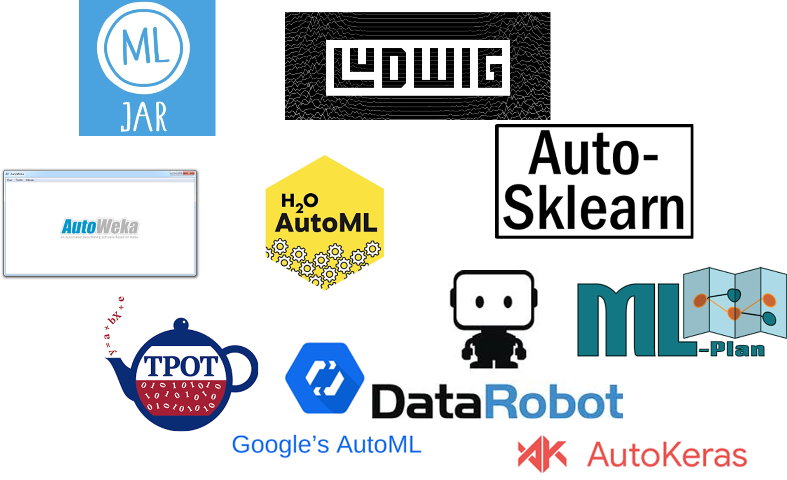

Connection successful!
R is connected to the H2O cluster:
H2O cluster uptime: 2 hours 13 minutes
H2O cluster timezone: Europe/Zurich
H2O data parsing timezone: UTC
H2O cluster version: 3.42.0.3
H2O cluster version age: 7 days, 4 hours and 38 minutes
H2O cluster name: H2O_started_from_R_luca_qxb001
H2O cluster total nodes: 1
H2O cluster total memory: 4.87 GB
H2O cluster total cores: 8
H2O cluster allowed cores: 8
H2O cluster healthy: TRUE
H2O Connection ip: localhost
H2O Connection port: 54321
H2O Connection proxy: NA
H2O Internal Security: FALSE
R Version: R version 4.2.2 Patched (2022-11-10 r83330) Automated Machine Learning with R and h2o
Workshop 3 @ Swiss Statistics Meeting, 30.08.2023, Universität Basel
Luca Hüsler
Amt für Daten und Statistik BL
General info
Internet:
Connect to unibas-visitor on your laptop
Open browser and follow the instructions (SMS authentication)
…or use your phone as a hotspot
Access RStudio Server via rstudio.automl-workshop.ch (more info later on)
Outline
Theory (ca. 20 Min)
What is automated machine learning (AutoML) and why use it?
What is H2O?
Code examples
Practice (ca. 40 Min)
Presenting the use case
Hands-on practices
Short discussion
Theory
What is automated machine learning?

What is automated machine learning?
A schematic for the typical modeling process (Silge & Kuhn, 2023).
…and why use it?
- Choosing the best algorithm: There is no single best algorithm (“No free lunch” theorem)
- Availability: Reduce the need for expertise in machine learning
- Error reduction: Standardized approach that guarantees same operations to all models
- Efficiency: Automation of iterative tasks, more time to focus on model evaluation and explainability
What is H2O.ai?
AutoML tools (Source: ISG Siegen)
What is H2O.ai?
Machine learning platform that is:
- Open source
- APIs available for R and Python (or web GUI)
- Written in Java (speed)
H2O AutoML
AutoML trains several models by using the following available algorithms:
XGBoost
GBM (Gradient Boosting Machine)
GLM (Generalized Linear Model)
DRF (Distributed Random Forest)
XRT (eXtremely Randomized Trees)
DeepLearning (Fully Connected Deep Neural Network)
Stacked Ensembles (Combination of the above models)
See documentation: H2O AutoML
Code example
Getting started
What you need:
R + RStudio (or other IDE)
Java
R-Package h2o
See documentation: Install in R
Initialize and connect
Loading the library and connecting to the H2O cluster
See documentation: Starting h2o from R
Prepare the data
The Iris Dataset contains four features (length and width of sepals and petals) of 150 samples of three species of Iris (Iris setosa, Iris virginica and Iris versicolor).
Prepare the data
Transform your data to a h2o dataframe:
Similar to an R dataframe, but it is located in the H2O cluster, not in memory.
Prepare the data
Split data into train and test set:
Check the dimension of train and test set:
Prepare the data
Define target and predictor variables:
Run AutoML
Minimal example:
Learn more: h2o.automl()
Run AutoML
More advanced example:
aml <- h2o.automl(x = x, # predictors
y = y, # target
training_frame = train, # training data
max_runtime_secs = 10, # define runtime
max_models = 20, # define max number of models to be trained
exclude_algos = c("GLM", "DeepLearning"), # excluding specific algos
include_algos = NULL, # including specific algos
) Learn more: h2o.automl()
Get the leaderboard
See which algorithm performed best:
Evaluate performance on test data
Practice
Setup
Go to: http://rstudio.automl-workshop.ch/